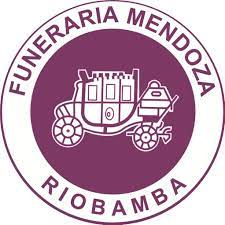

Servicios Funerales
Les ofrecemos las mayores comodidades y el mejor
servicio, a más de facilidad de pago entre otras.
Tanatorio
Nuestros tanatorios están equipados con los
servicios necesarios para garantizar la comodidad
de los asistentes al velatorio.
Coches fúnebres
Les podemos ofrecemos una amplia gama de coches
fúnebres de alta gama, totalmente equipados.
Tramitación
Nos responsabilizamos de los trámites legales
que genera la defunción de su familiar.
Misión y Visión
Misión: Ser una empresa de tradición pionera en la ciudad de Riobamba,
prestando servicios funerarios de buena calidad, con alto sentido de
solidaridad y de compromiso social.
Visión: Llenar y superara las expectativas de nuestra comunidad con nuestro
servicio, especialmente en los momentos y situaciones más difíciles.
Sobre Nosotros
Somos una empresa comprometida en ofrecer, coordinar
y satisfacer las necesidades de nuestros clientes con
integridad, dignidad y seriedad en un servicio funerario
con alta moral y sensibilidad humana.
Funeraria Mendoza brinda consuelo en los momentos más
díficiles , y garantiza el más amplio servicio exequial de
máxima calidad y entregando siempre el mejor esfuerzo con
responsabilidad social.
Empresa que brinda sus servicios de acompañamiento desde
los años 40 siendo está la primera funeraria fundada, está dispuesta a
brindar sus servicio. Todos nuestros traslados lo realizamos sin utilizar
intermediarios, para facilitar trámites y reducir costos a las familias.
Nuestra filosofía es ofrecer siempre la misma calidad, realizando
cada servicio de forma personalizada, consiguendo asi superar las
expectativas de quienes confían en nuestra empresa.

Funeraria Esperanza
"Estamos contigo, haciendo más fácil el momento más difícil"